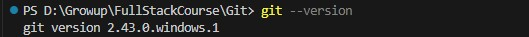
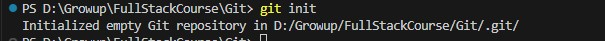
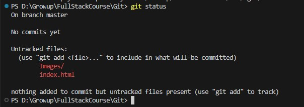
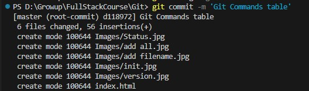
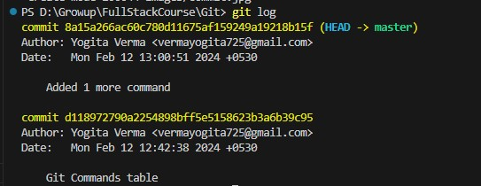
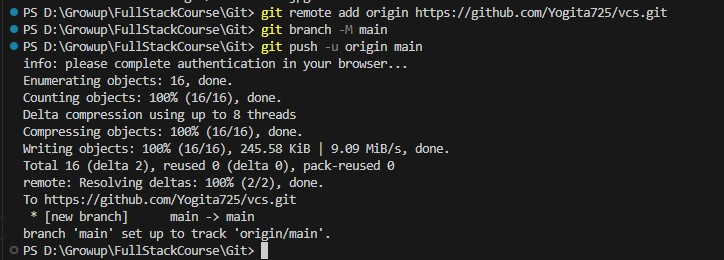

Git and Github commands
| COMMANDS | DESCRIPTION |
|---|---|
| git --version | To check the version of the git.
 |
| git init | To initialse the git into the particular folder, so that git can keep track of the activities being done in the folder.
Once the Git is initialsed, the files will be in Untracked status represented with a [U] symbol.
 |
| git add filename | This command will change the status of the file from Untracked to Changes to be commited stage(Basically the Index is added)
[U -> A]

|
| git add . | To add all the untracked or Modified files to stagging area for commit

|
| git status | With this command, we can see the status of the file whether the file is in Untracked, Modified or In Stagging area ready to be committed/pushed
 |
| git commit -m 'relatable message' | To commit the changes, which are stagged area.
[Note: In the message, give a message in such a way that you can understand afterwards what you've done in that commit part]
If you're doing the commit for the first time, then you will get an error stating - 'Please tell me who you are'To resolve this error, run the below commands -
If you want to see/edit the config, run the below command -
 |
| git log | This command is used to see the tracked versions of the code after committing the changes.
It will also give the commit id, which is useful to backtrack the code.
 |
| git reset --hard commit_id | If in case, you did some mistake and unable to figure out what is the mistake, so with the help of this command we can go back to the previous version of the code. [Note : --hard means it will remove the complete code part and then the head will point to the commit id] |
| git reset --soft commit_id | If in case, you did some mistake and unable to figure out what is the mistake, so with the help of this command we can go back
to the previous version of the code.
[Note : --soft means the code part will be there and head will point to the commit id version]

|
Let's learn about the commands to connect the code with the Github
| COMMANDS | DESCRIPTION |
|---|---|
| git remote add origin https://github.com/Yogita725/vcs.git | To provide origin to the code, and to understand where the code needs to be pushed. |
| git branch -M main | This command will create a branch |
| git push -u origin main | Pushing the code into that origin
 |
| git pull | If in the new dir, we have clone the code and in that in the main code area some other code got pushed, so to pull all the changes first, this command is used. This will help us to work on the updated code. |
| git branch | This command will show all the branches currently presentincluding main |
| git branch branchname | This command will help to create a new branch |
| git checkout branchname | To change the branch, suppose you want to change the current branch to test branch and perform some testing in that branch |
| git merge branchname | If the code testing is done in some other branch and you want to merge that code into the main branch. So, just checkout from the main and give this merge command and mention branch name, from which we want to merge the code. |